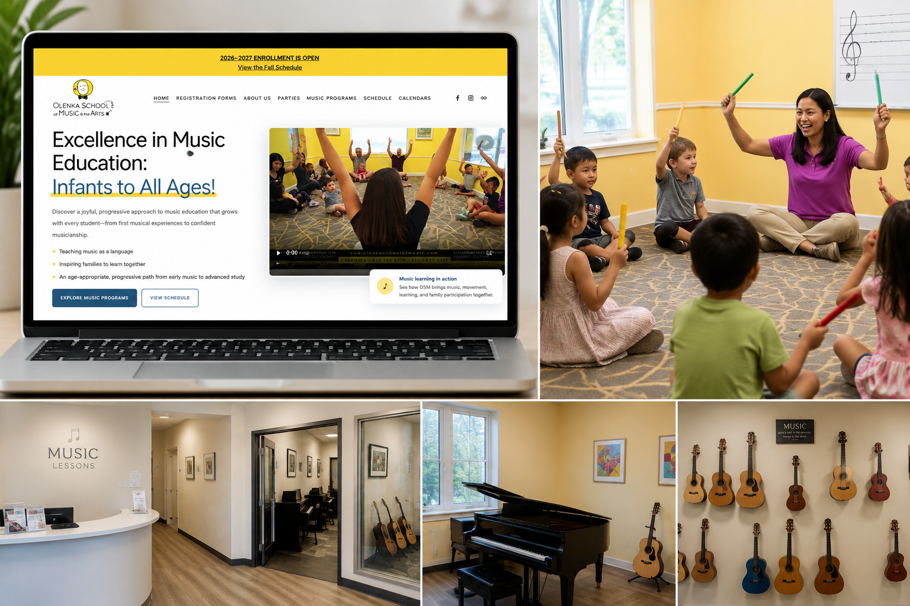

Customer journey · Digital operations · Business systems
Music School
Enrollment & Operations Transformation
The project began with a request for school-management software. The evidence showed a more immediate business priority: families first needed a clearer path to understand and enroll in programs.

Reduce manual administration
Enrollment, scheduling, payments, communication and student updates consumed too much time.
The parent journey was fragmented
Programs, age groups, schedules, tuition, trials and registration paths were difficult to compare and maintain.
Software was not the first constraint
Implementing a platform first would not solve the immediate enrollment and revenue problem.
Fix acquisition before migration
Rebuilt program pages, schedules, pricing, trial and enrollment paths, email assets, SEO foundations and campaign materials. Then mapped requirements and shortlisted five systems for hands-on testing.
~4× first-month growth
Registrations and revenue increased approximately fourfold compared with the same period the previous year—with the same programs and enrollment timing.